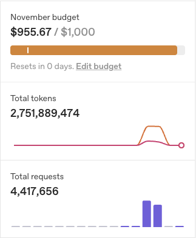
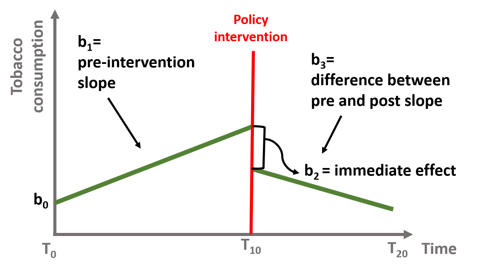
yt = β1 stept + β2 pulset + β3 slopet + εt,
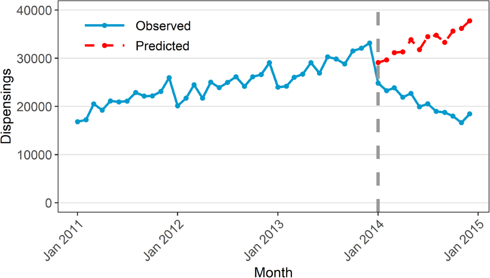
Source: Schaffer, A.L., Dobbins, T.A. & Pearson, SA. (2021). Interrupted time series analysis using autoregressive integrated moving average (ARIMA) models: a guide for evaluating large-scale health interventions. BMC Med Res Methodol 21, 58.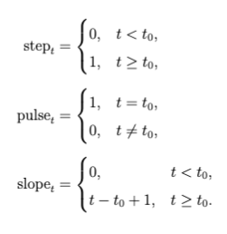
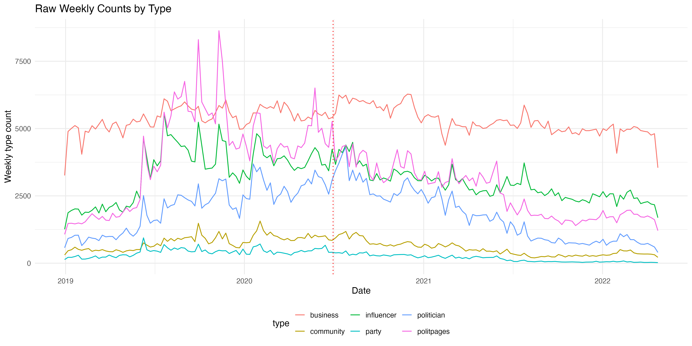
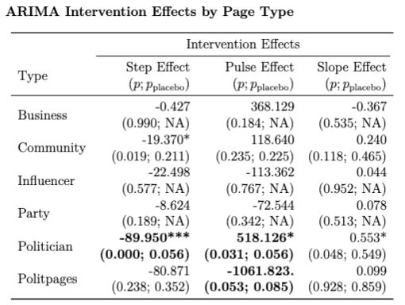
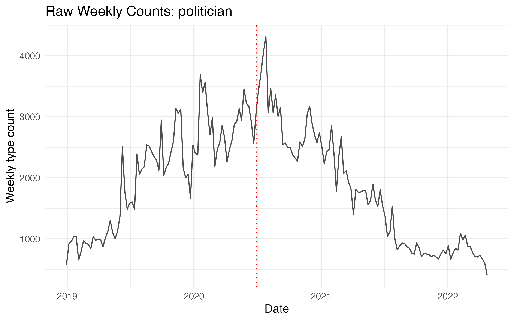
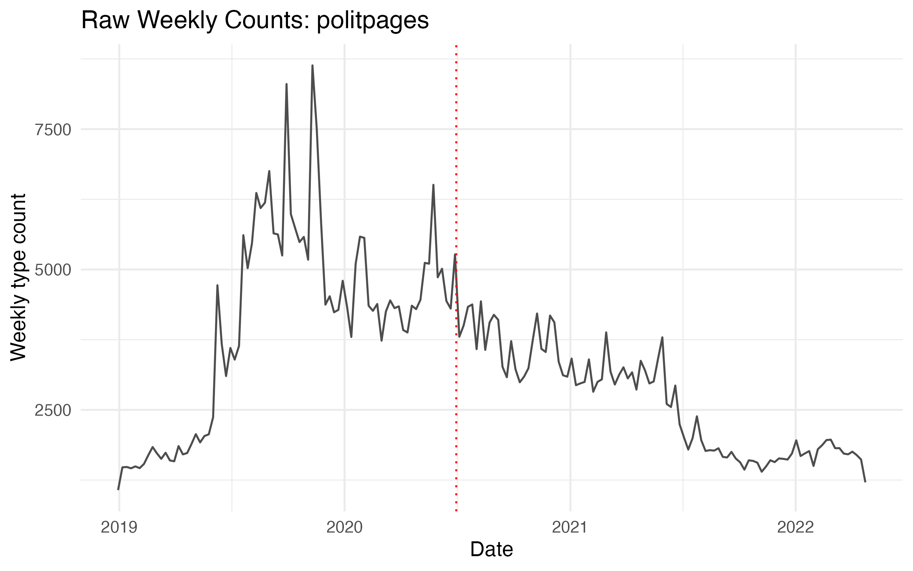
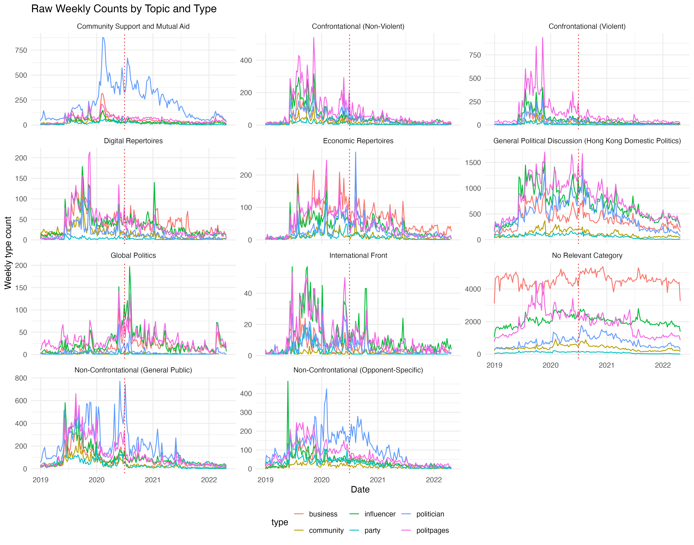
| Type | Step Effect (p ; pplacebo) |
Pulse Effect (p ; pplacebo) |
Slope Effect (p ; pplacebo) |
|---|---|---|---|
| Business | -0.427 (0.990; NA) |
368.129 (0.184; NA) |
-0.367 (0.535; NA) |
| Community | -19.370* (0.019; 0.211) |
118.640 (0.235; 0.225) |
0.240 (0.118; 0.465) |
| Influencer | -22.498 (0.577; NA) |
-113.362 (0.767; NA) |
0.044 (0.952; NA) |
| Party | -8.624 (0.189; NA) |
-72.544 (0.342; NA) |
0.078 (0.513; NA) |
| Politician | -89.950*** (0.000; 0.056) |
518.126* (0.031; 0.056) |
0.553* (0.048; 0.549) |
| Politpages | -80.871 (0.238; 0.352) |
-1061.823. (0.053; 0.085) |
0.099 (0.928; 0.859) |
| Page Type | Topic | Effect | Estimate | p | pplacebo |
|---|---|---|---|---|---|
| Party | No Relevant Category | Pulse | 22.292 | 0.037 | 0.050 |
| Politician | Confrontational (Non-Violent) | Pulse | -84.062 | 0.000 | 0.007 |
| Politician | Confrontational (Violent) | Pulse | -50.496 | 0.023 | 0.035 |
| Politician | Digital Repertoires | Pulse | -19.961 | 0.010 | 0.064 |
| Politpages | Non-Confrontational (General Public) | Pulse | -90.110 | 0.045 | 0.099 |
| Politpages | Economic Repertoires | Pulse | -29.826 | 0.070 | 0.099 |
| Business | Non-Confrontational (General Public) | Pulse | -79.033 | 0.023 | 0.050 |
| Community | Non-Confrontational (Opponent-Specific) | Pulse | -8.435 | 0.046 | 0.071 |
| Community | Confrontational (Non-Violent) | Pulse | -21.257 | 0.012 | 0.085 |
| Community | Digital Repertoires | Pulse | -16.184 | 0.026 | 0.099 |
| Community | No Relevant Category | Pulse | 98.335 | 0.004 | 0.043 |
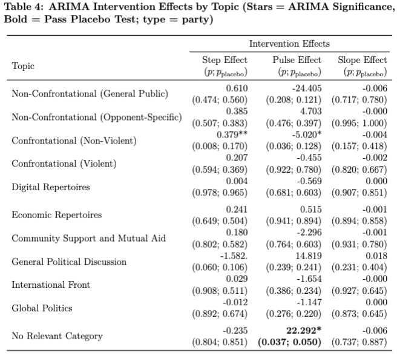
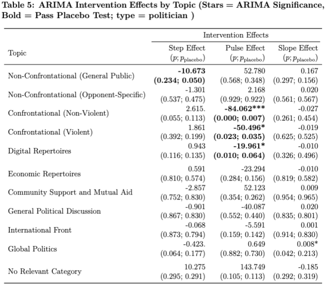
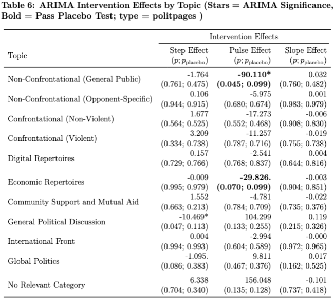
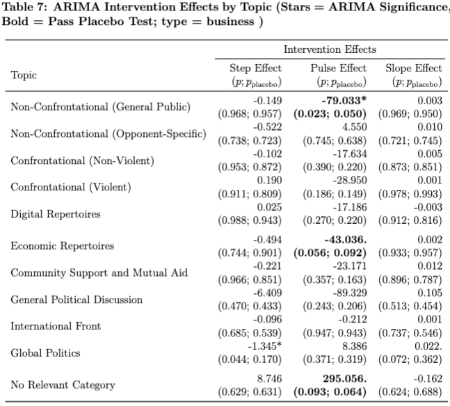
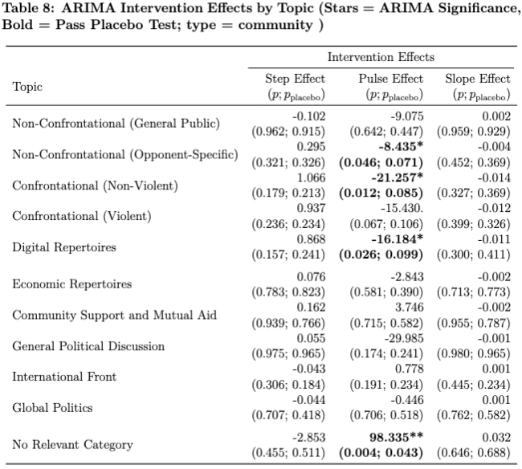
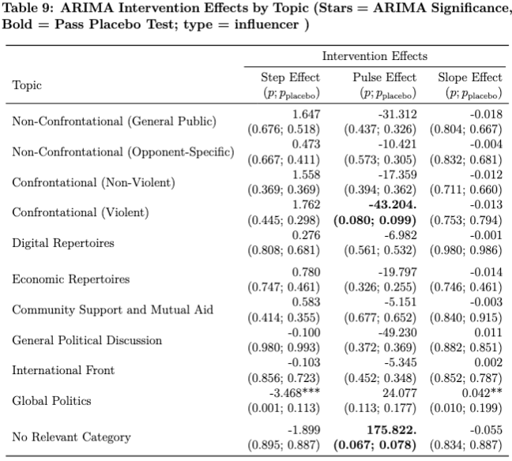
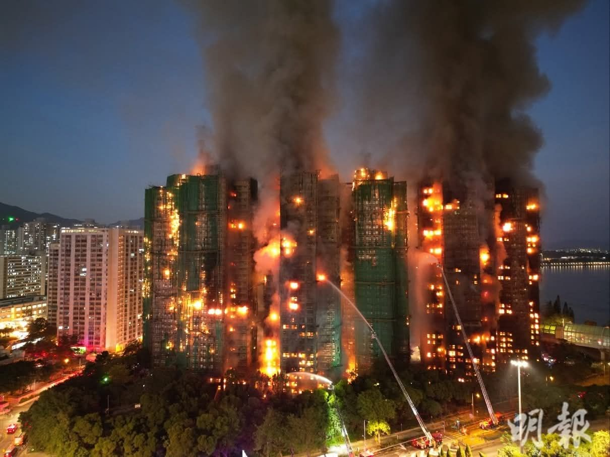
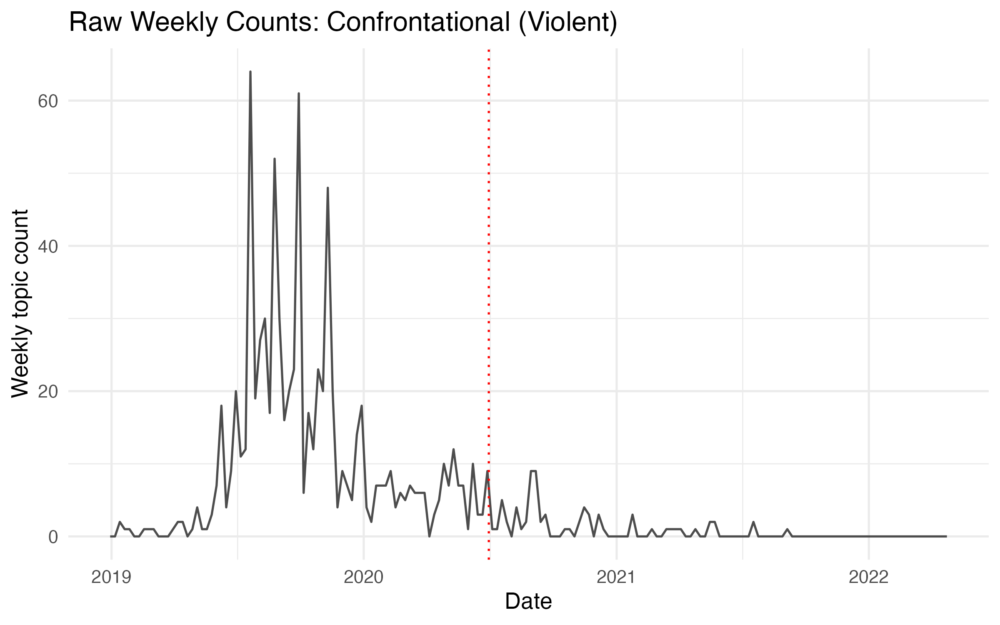
LinkedIn: justinchuntingho
Github: justinchuntingho
Email: jcho@nycu.edu.tw